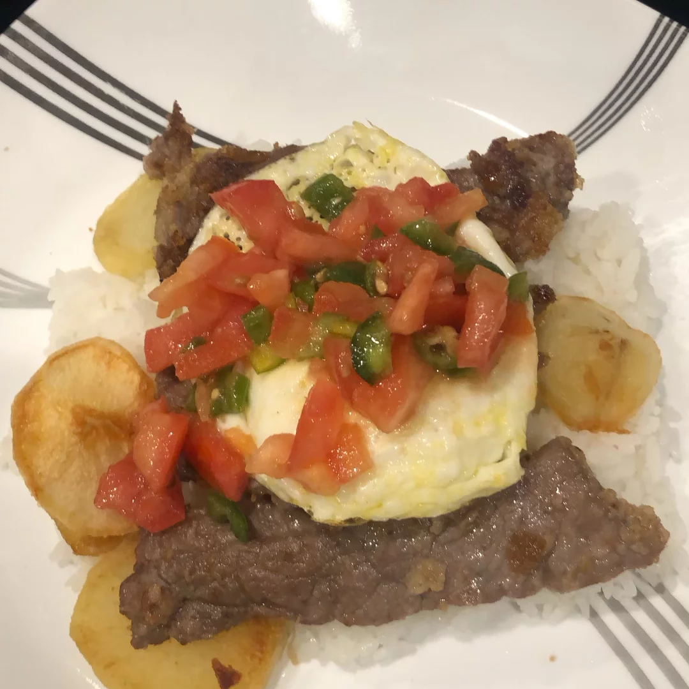

Silpancho

Description
A delicious typical food from Bolivia. Enjoy it!
- 4 cups water
- 2 cups white rice
- 6 potatoes, peeled
- ½ cup vegetable oil, divided
- 3 cups bread crumbs
- 1 ½ pounds beef top sirloin, thinly sliced
- salt to taste
- 6 eggs
- 3 onions, diced
- 2 tomatoes, diced
- 2 red chile peppers (locoto), chopped
- 3 tablespoons olive oil, or to taste
Steps
- Bring 4 cups water and rice to a boil in a saucepan. Reduce heat to medium-low, cover, and simmer until rice is tender and liquid has been absorbed, 20 to 25 minutes.
- Place potatoes into a large pot and cover with salted water; bring to a boil. Reduce heat to medium-low and simmer until tender, about 20 minutes. Drain. Cool until easily handled, about 5 minutes. Cut into 1/2-inch slices.
- Heat 1/4 cup vegetable oil in a deep skillet. Cook sliced potatoes in batches until golden brown, about 2 minutes per side. Drain on paper towels.
- Pour bread crumbs into a shallow bowl. Season beef with salt and press into the bread crumbs until evenly coated.
- Heat remaining 1/4 cup vegetable oil in the deep skillet. Cook beef in batches until browned, about 1 1/2 minutes per side. Drain on paper towels.
- Heat a large nonstick skillet over medium heat. Crack in eggs and cook until set, about 5 minutes.
- Combine onions, tomatoes, chile peppers, and olive oil in a bowl. Season with salt.
- Layer rice, potatoes, beef, and fried eggs on serving plates. Top with onion and tomato mixture.